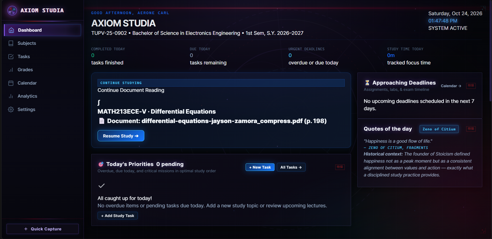

 Axiom Studia
Axiom Studia
Academic Productivity Platform
Overview
Axiom Studia is a personal web-based academic productivity platform designed to organize subjects, learning resources, and study activities in one centralized workspace. The project began as a personal tool for managing the complexity of engineering coursework and has grown into an exploration of interface design, usability, and AI-assisted development techniques.
Problem Statement
Academic workloads for engineering students involve multiple subjects, references, assignments, and schedules that are difficult to track across scattered notes, files, and platforms. Existing general-purpose tools often lack the structure or customization needed for a focused academic workflow.
Objectives
- Create a centralized interface for managing academic subjects and resources.
- Design an intuitive, low-friction user experience suitable for daily use.
- Explore the practical application of UI/UX principles in a real working tool.
- Develop the platform iteratively using AI-assisted coding and design refinement.
My Contribution
- Designed and refined the interface layouts and navigation structure.
- Applied iterative problem-solving to improve usability across design cycles.
- Used AI-assisted coding tools to support implementation, troubleshooting, and design refinement.
Development Process
Development began with hand-sketched wireframes and conceptual layouts for the core academic management features. Each iteration focused on simplifying the interface and reducing visual noise while maintaining full functionality. AI-assisted tools supported code generation and design decisions at various stages of development.
Current Status
The current version includes a working dashboard for monitoring daily tasks, upcoming deadlines, study time, and continuing reading. Core sections for subjects, tasks, grades, calendar planning, analytics, and settings are present as the platform continues through active personal development.
Lessons Learned
- UI/UX design requires iterative testing — early assumptions about usability often need to be revised.
- AI-assisted coding is most effective when combined with a clear design intent and critical review of outputs.
- Building personal tools is an effective way to develop practical skills and identify real engineering problems.